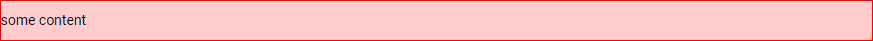

Предисловие
Где я?
В Нарнии. Здесь навалены в кучу всякие CSS сетки, блоки-заготовки и багофичи для web-фронтенда. Если ты попал сюда случайно и тебе неуютно, можешь выйти из шкафа. Автор не планировал пускать сюда гостей. Если хочешь, можешь остаться, только не жалуйся потом. Для связи с автором можно написать письмо на деревню дедушке.
Зачем?
Основа данной библиотеки - система сеток. Сетки имеют устройство и принципы применения примерно схожие с Bootstrap 4, но тут гораздо меньше свистоперделок в виде библиотеки классов и основной контейнер имеет резиновый размер. В Bootstrap же он скачет по брейкпоинтам то оставляя огромные уши по бокам, вначале брейкпоинта, то сжимаясь к концу.Главная идея библиотеки им. Пупы-Лупы заключается в том, что перед началом проекта верстальщик определяет ширину контейнера согласно дизайна, вносит эту ширину в переменную $container-width , компилирует библиотеку и начинает пользоваться оберткой div.l-container в качестве основной обертки для всего сайта, независимо от того будет ли внутри сетка с колонками из библиотеки или кастомная разметка. Ну а когда понадобится сетка, можно ее добавлять, определять другие переменные (количество колонок, размер отступов и т.д.), компилировать на лету и пользоваться дальше.
То есть, тут многое как в привычном Bootstrap, но меньше лишнего и больше гибкости. В принципе можно пилить сайт с дизайном "не по сетке", а потом запилить "карточки товаров" опираясь на библиотеку им. Пупы-Лупы. Как-то так...
Договор с самим собой об условности
Автор данной библиотеки, помимо того что обращается к самому себе в третьем лице, еще и вступил с самим собой в договор:
- 1) Описывать HTML через синтаксис Pug;
- 2) Описывать CSS через синтаксис Sass (SCSS);
- 3) Описывать JS через vanilla или jQuery (в зависимости от того, на чем написан обсуждаемый модуль).
Быстрый старт
- .l-container
- Основной контейнер сетки.Используется как главный контейнер сайта (для всей контентной части).
Устройство контейнера:
X
.l-container {
width: 100%;
max-width: calc(1500px + 5vw * 2);
margin: 0 auto;
padding: 0 5vw;
}
.l-container | some content

kek
1
2
3
4